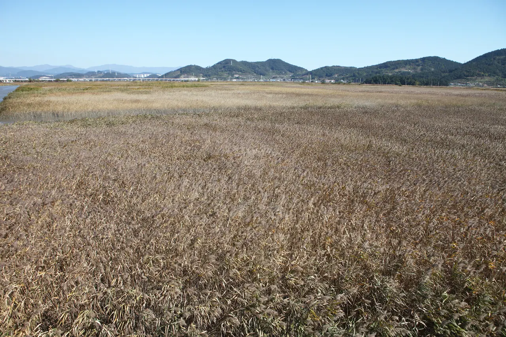
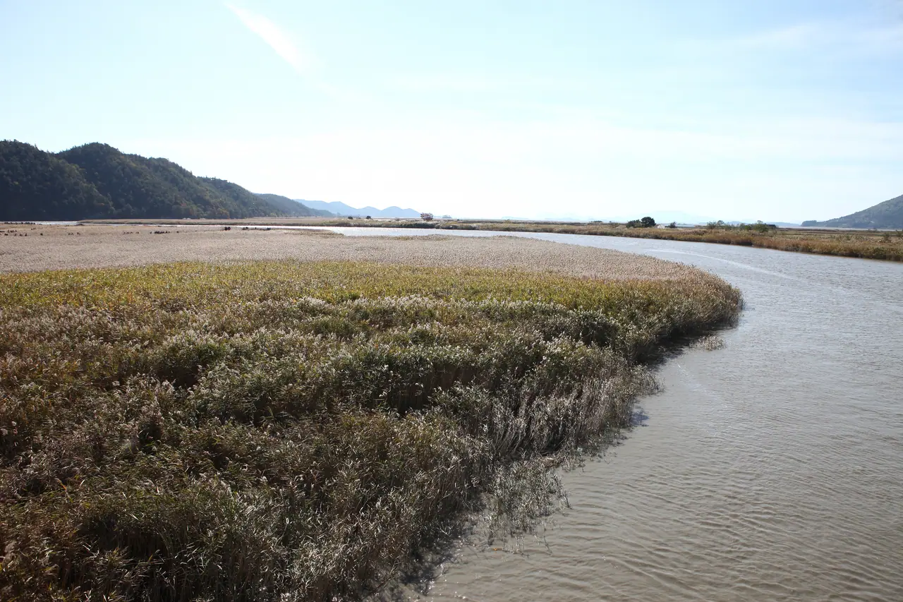

▲ 순천만습지의 갈대 데크길. 갈대축제 절정기에는 이 길을 걷는 인파 자체가 병목이 된다 ⓒ CarPrism
순천만 갈대축제는 매년 가을 순천만습지 일대에서 열리는 대표적인 가을 축제다. 2026년에는 10월 말부터 11월 초 사이 개최가 예상되며, 방문객 규모는 약 100만 명에 이를 것으로 전망된다. 순천만습지와 국가정원을 표 한 장으로 오가는 방법은 이미 알려져 있지만, 갈대가 절정에 달하는 축제 기간에는 이 표만으로 해결되지 않는 혼잡이 따로 있다.

▲ 순천만국가정원. 습지 관람 전 이곳부터 둘러보는 방문객이 많아 통합권 동선의 시작점이 된다 ⓒ 한국문화관광연구원 (공공누리 제1유형)
1. 표 한 장으로 안 풀리는 것 — 사람 자체의 병목

▲ 순천만습지의 대표 풍경인 S자 물길. 이 조망 지점인 용산전망대가 갈대축제 절정기 최대 병목 구간이다 ⓒ CarPrism
순천만습지와 국가정원은 통합 입장권과 PRT(궤도차) 덕분에 평소에는 동선이 비교적 매끄럽다. 문제는 갈대가 절정에 달하는 축제 기간이다. 이때는 표나 교통수단이 아니라 사람 자체가 병목이 된다. 특히 습지의 대표 조망 지점인 용산전망대는 좁은 산길 형태라 한 번에 수용할 수 있는 인원이 제한적이다.

▲ 순천만 갈대밭. 억새와 달리 물가를 따라 넓게 퍼져 자라 절정기엔 관람로 자체가 좁게 느껴진다 ⓒ 국가유산청 (공공누리 제1유형)
2. 용산전망대가 막히면 — PRT 아니면 도보 30분
▲ 순천만습지 갈대 데크길. 용산전망대로 이어지는 구간은 절정기 도보 이동에 시간이 오래 걸린다 ⓒ CarPrism
용산전망대 진입 구간이 만차 수준으로 붐비면, 방문객은 PRT를 이용하거나 도보로 약 30분을 걸어 올라가야 한다. 습지 쪽에서 걸어 들어가는 경로는 평소라면 여유로운 산책 코스지만, 절정기 인파 속에서는 체력 소모가 상당하다. PRT는 5분 간격으로 운행하며 1회 이용료는 8,000원이다.

▲ 순천만 갯벌을 따라 휘어지는 물길. 평지 지형이라 걷는 동선은 편하지만 인파가 몰리면 그만큼 병목도 커진다 ⓒ 국가유산청 (공공누리 제1유형)
3. 일몰 시각에 맞춘 도착 타이밍

▲ 순천만습지의 칠면초 군락. 갈대와 함께 늦가을 습지를 채우는 풍경이다 ⓒ CarPrism
| 시기 | 일몰 시각(예상) | 권장 도착 시각 |
|---|---|---|
| 10월 말 | 약 17:30 | 16:30 전후 |
| 11월 초 | 약 17:15 | 16:15 전후 |
순천만습지는 노을과 갈대가 함께 어우러지는 저녁 풍경으로 특히 유명하다. 다만 절정기에는 일몰 시각에 맞춰 인파가 한꺼번에 몰리므로, 일몰 약 1시간 전 도착을 목표로 삼는 것이 좋다. 야간에는 조명이 켜지고 오후 9시까지 운영되므로, 저녁 늦게 여유롭게 둘러보는 선택지도 있다.

▲ 순천만습지를 찾은 흑두루미 무리. 갈대축제 절정기인 늦가을은 겨울 철새가 도래하는 시기와도 겹친다 ⓒ 순천시 순천만국가정원·습지
4. 정리
체크포인트
- 갈대축제 절정기의 진짜 병목은 표가 아니라 용산전망대 진입 인파다.
- 전망대가 막히면 PRT(8,000원) 또는 도보 30분 중 선택해야 한다.
- 노을 풍경을 보려면 일몰 1시간 전 도착을 목표로 잡는다.
- 야간에는 오후 9시까지 조명과 함께 운영되므로 저녁 시간대도 대안이 된다.
정확한 축제 일정과 통제 계획은 순천만정원 공식 홈페이지(scbay.suncheon.go.kr)에서 확인하는 것이 가장 정확하다.